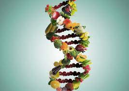

2. Pratique atividades regularmente.
Você sabia?
As atividades físicas regulares são indispensáveis do ponto de vista nutricional por várias razões:
- - Controle de Peso: O exercício ajuda a queimar calorias,
contribuindo para o controle do peso corporal. Manter um peso saudável é fundamental
para prevenir uma série de problemas de saúde relacionados à má alimentação, como
obesidade, diabetes tipo 2 e doenças cardíacas.
- - Metabolismo Saudável: O exercício regular pode aumentar o metabolismo,
tornando o corpo mais eficiente na queima de calorias e no processamento de nutrientes.
Isso pode ajudar a manter um equilíbrio saudável entre a ingestão e o gasto de energia.
- - Controle da Glicose no Sangue: A atividade física regular pode
ajudar a melhorar a sensibilidade à insulina, permitindo que as células absorvam melhor
a glicose do sangue. Isso é especialmente importante para pessoas com diabetes ou em
risco de desenvolver a doença.
- - Saúde Cardiovascular: O exercício regular fortalece o coração e
melhora a circulação sanguínea, reduzindo o risco de doenças cardíacas. Uma boa
saúde cardiovascular é crucial para garantir que os nutrientes sejam transportados
eficientemente para as células do corpo.
- - Saúde Óssea: Atividades físicas que envolvem o peso corporal,
como corrida e musculação, podem ajudar a fortalecer os ossos e prevenir a perda
de massa óssea, reduzindo o risco de osteoporose e fraturas.
- - Saúde Mental (e sim, sua saúde mental importa nutricionalmente):
O exercício regular não apenas melhora a saúde física, mas também tem benefícios significativos
para a saúde mental. Ele pode ajudar a reduzir a ansiedade e a depressão, o que por sua vez
pode influenciar positivamente os padrões e escolhas alimentares.
Em resumo, as atividades físicas regulares desempenham um papel fundamental na
promoção de uma boa saúde nutricional, por isso, Combiná-los é essencial para manter
um estilo de vida equilibrado e nutricionalmente adequado.
3. Adote uma nutrição inteligente
Você sabia?
Uma nutrição inteligente é essencial para garantir que nosso corpo receba os nutrientes
necessários para funcionar adequadamente, promovendo a saúde e o bem-estar a longo prazo.
Seguindo as orientações até aqui e adotando esse tipo de nutrição com o auxílio de alguém
especializado nesse segmento, você poderá acessar os seguintes benefícios:
- - Saúde Física: Uma alimentação equilibrada e inteligente fornece os
nutrientes essenciais, como vitaminas, minerais, proteínas, carboidratos e gorduras
saudáveis, que são necessários para manter a saúde física. Esses nutrientes desempenham
papéis fundamentais em processos corporais, como a produção de energia, a função
imunológica, o crescimento e a reparação celular.
- - Prevenção de Doenças: Uma dieta rica em nutrientes pode ajudar a
prevenir uma série de doenças crônicas, como obesidade, diabetes tipo 2, doenças cardíacas,
hipertensão, osteoporose e certos tipos de câncer. Alimentos integrais, frutas, legumes,
grãos integrais e proteínas magras são componentes-chave de uma dieta saudável que pode
reduzir o risco dessas condições.
- - Controle de Peso: Uma nutrição inteligente envolve fazer escolhas
alimentares conscientes e equilibradas, o que pode ajudar no controle do peso corporal.
Consumir uma variedade de alimentos nutritivos e controlar o tamanho das porções pode ajudar
a prevenir o ganho de peso excessivo e facilitar a perda de peso, se necessário.
- - Melhoria do Desempenho Mental: Uma alimentação saudável não
beneficia apenas o corpo, mas também a mente. Nutrientes como ômega-3, vitaminas do
complexo B e antioxidantes podem melhorar a função cerebral, a cognição e o humor.
Uma dieta rica em alimentos frescos e integrais pode ajudar a reduzir o risco de
problemas de saúde mental, como depressão e ansiedade.
- - Promoção do Envelhecimento Saudável: Uma nutrição inteligente
desempenha um papel importante na promoção do envelhecimento saudável e na prevenção
de doenças relacionadas à idade. Uma dieta rica em antioxidantes pode ajudar a
proteger contra danos causados pelos radicais livres e reduzir o risco de doenças
degenerativas, como doenças cardíacas e declínio cognitivo.
- - Sustentabilidade: Escolhas alimentares inteligentes não beneficiam
apenas a saúde individual, mas também têm um impacto positivo no meio ambiente e na
sustentabilidade global. Optar por alimentos locais, sazonais e produzidos de forma
sustentável pode reduzir a pegada de carbono e promover práticas agrícolas mais
sustentáveis.

Você já tinha parado para pensar no poder que a alimentação tem sobre a sua saúde e bem-estar?
É incrível como aquilo que colocamos em nossos corpos pode impactar tão profundamente
nossa energia, nossa vitalidade e até mesmo nossa felicidade.
Nessa jornada rumo ao exterior da sua zona de conforto, opte por ter alguém ao seu lado que
entende verdadeiramente as complexidades da nutrição alguém que pode oferecer orientação
personalizada, adaptada às suas necessidades individuais e objetivos específicos.
Se quiser embarcar nessa, poderei te fornecer um plano alimentar,
mas também irá instruções valiosas sobre os melhores
alimentos para o seu corpo, ajudando-o a fazer escolhas inteligentes
que beneficiarão todas as áreas de sua vida cotidiana.
Juntos, poderemos explorar suas preferências alimentares,
seus hábitos diários e seus desafios únicos, criando um plano
de alimentação que seja realista, sustentável e delicioso.
Porque, sim, comida saudável também pode ser saborosa!
Então, que tal dar esse passo em direção a uma vida mais saudável e vibrante?
Agende agora mesmo sua consulta e descubra o poder transformador da alimentação consciente.
Seu corpo irá agradecer!
Lembre-se: investir em sua saúde é o melhor investimento que você pode fazer.
E uma consulta com uma nutricionista é o primeiro passo nessa jornada emocionante
em direção ao seu melhor eu.